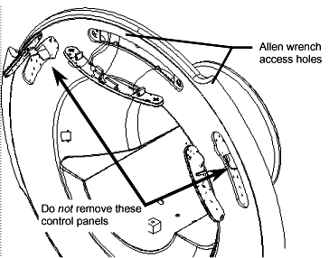

If the central control panel is secured with push-on fasteners, use your fingers to gently pry the panel off the end bell.
If the central control panel is secured by two half-turn latches that are accessed with a 3mm allen wrench, insert the allen wrench into each access hole and turn counterclockwise ½ turn to release the control panel as shown in Illustration 15.
Illustration 15: Control Panel Locations (Earlier Revision End Bells)
